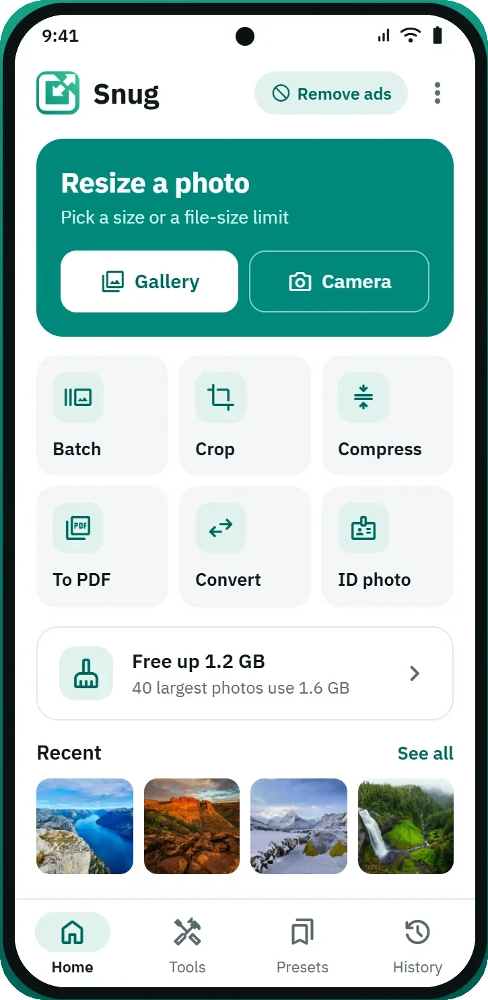
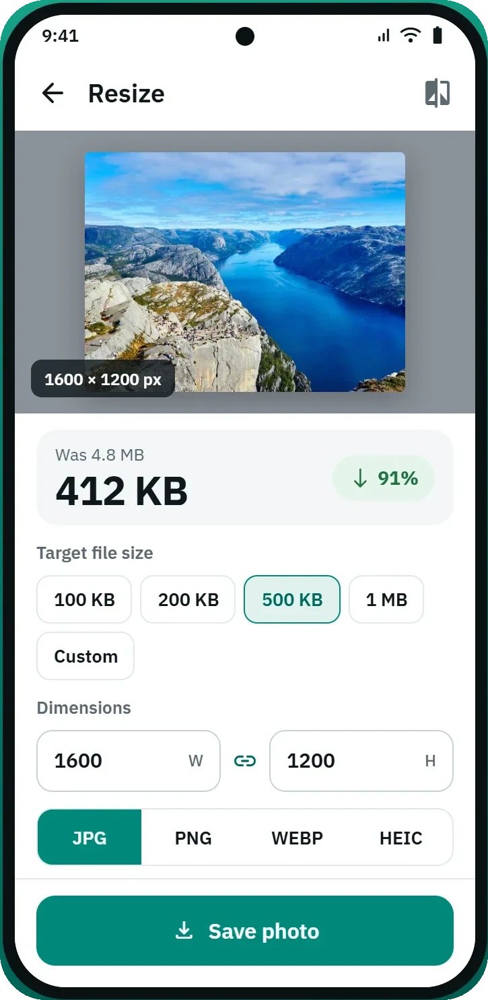
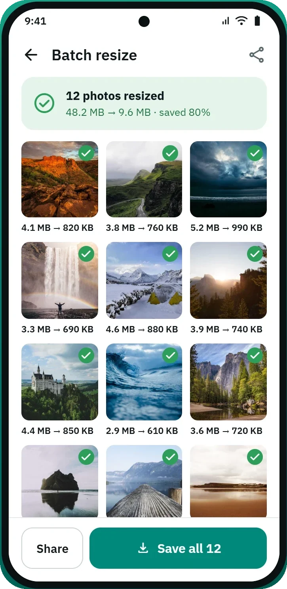
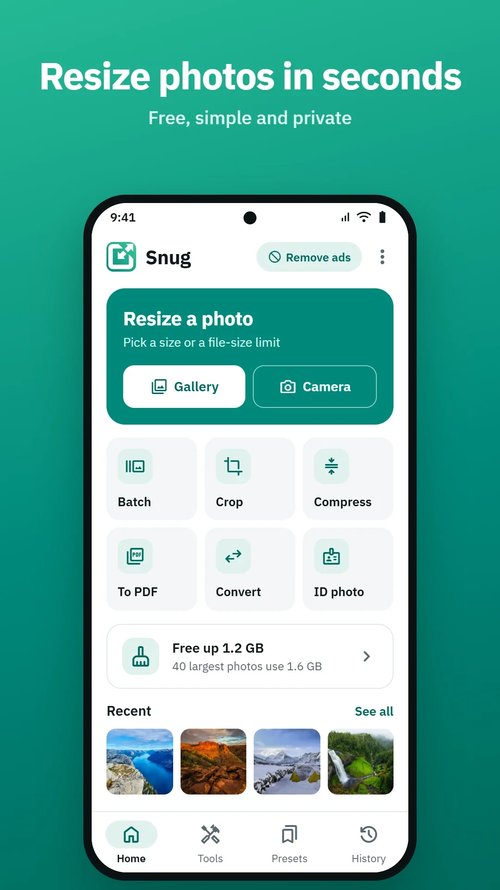
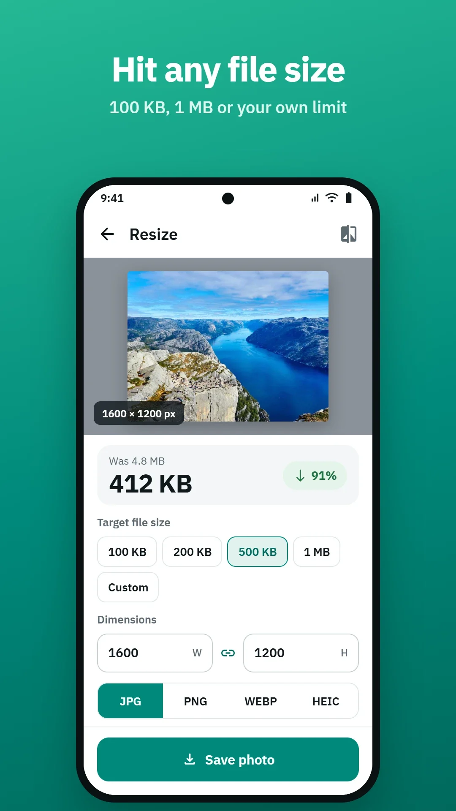
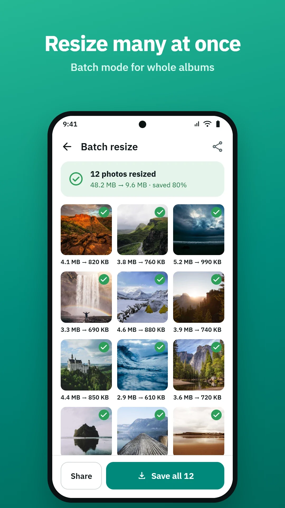

Snug
Resize photos in seconds. Free, simple and private.
Shrink, resize and fit photos for email, social posts and official forms. Everything happens on your phone — Snug works in airplane mode, and your pictures never leave the device.
- Free
- Batch resize
- Works offline

Overview
What it does
One small app for every awkward size requirement you run into — a kilobyte limit on a form, a profile picture that has to be square, forty holiday photos that are far too big to email.
- Resize by kilobytes, pixels, percentage or print size
- Crop, fit, rotate and convert between JPG, PNG and WebP
- Presets for passport photos, exam forms, marketplaces and social networks
- Batch resize and rename, images to PDF, watermarks, metadata removal
- Originals are always kept — results are saved as new files
How it works
Three taps, start to finish
No project files, no export dialog, no account to make first.
- 1
Pick a photo
Open Snug and choose an image from your gallery, or take one with the camera. Nothing is uploaded — the file is read straight from the device.
- 2
Choose a size
Set a target file size, type exact pixel dimensions, scale by percentage, or tap a preset for the form you are filling in.
- 3
Save the new file
Snug writes the result into
Pictures/Snugas a new file. Your original photo stays exactly where it was, untouched.
Target file size
Hit any file size
Upload forms almost never ask for pixels. They ask for kilobytes, and they reject anything over the line. Snug works backwards from the limit you need.
- Tap 100 KB, 200 KB, 500 KB or 1 MB — or type your own limit
- See the before and after size, and how much was saved, before you commit
- Set exact width and height, with the aspect ratio locked or free
- Save out as JPG, PNG, WebP or HEIC

Batch mode
Resize many at once
A whole album through the same settings in one pass, with a running total of what you saved and every original still sitting where it was.
- Pick a folder or a selection and apply one setting to all of it
- Watch each photo report its own before and after size
- Rename the batch on the way out, so the files arrive in order
- Share the finished set, or save all of it to your gallery at once

Toolbox
Every tool in one place
The things you actually need when a photo is the wrong shape, the wrong size or the wrong format — and nothing you don't.
- BatchRun a whole album through the same settings in one pass.
- CropTrim, straighten and fit to an exact aspect ratio.
- CompressDrop the file size and keep the dimensions you already have.
- To PDFCombine several photos into a single document to attach.
- ConvertMove between JPG, PNG, WebP and HEIC in one tap.
- ID photoPassport and document sizes, measured and ready to print.
- Free up spaceFind the biggest photos on the phone and shrink them.
- HistoryEvery job you have run, with the originals still intact.
Privacy
Your photos never leave your phone
Photo tools usually mean uploading your pictures to someone's server and hoping for the best. Snug does the work on the device instead, which makes most of the usual questions disappear.
No server
There is nothing to upload a photo to, and no account it could be attached to.
No account
No sign-up, no login, no email address. Snug stores nothing about you.
No tracking
No analytics, no crash reporting and no tracking SDKs. Snug does not measure how you use it.
Works in airplane mode
Turn the network off entirely and every tool still works exactly the same.
Presets
The sizes people actually get asked for
Someone has already worked out the measurements for the form in front of you. Pick the preset and skip the arithmetic.
- Passport and ID photosStandard document sizes with the right proportions for print.
- Exam and government formsThe tight kilobyte limits that application portals insist on.
- Social networksProfile pictures and post sizes that stay sharp after upload.
- Marketplace listingsClear, fast-loading photos for selling pages and classifieds.
Presets are a convenience, not a guarantee. Requirements change, and whether an image is accepted also depends on things a resizer cannot judge — so check the rules of the body you are submitting to.
Screenshots
A look inside



Free, forever
Every tool, preset and batch size is free and always will be. An optional subscription removes ads. That is the only difference.
- FreeEvery tool, every preset, every batch size, with ads.
- Ad-freeExactly the same app, without the ads. Monthly, quarterly, six-monthly or annual.
Questions
Frequently asked
Is Snug really free?
Yes. Every tool, preset and batch size is free and always will be. An optional subscription removes ads, and that is the only thing it changes — nothing is locked behind payment.
Do my photos get uploaded anywhere?
No. Every resize, crop, conversion and PDF happens on your device. Snug has no server, so there is nothing to upload a photo to. You can put the phone in airplane mode and it still works.
Do I need an account?
No. There is no sign-up, no login and no email address. Snug never asks who you are.
Will it overwrite my original photo?
No. Results are saved as new files in Pictures/Snug and your originals are left exactly as they were. Replacing an original is a separate choice that asks for confirmation first.
Which formats can Snug read and write?
JPG, PNG, WebP and HEIC. You pick the output format on the resize screen, so you can open a HEIC photo from your camera and save it as a JPG that any upload form will accept.
Can I hit an exact file size, like under 100 KB?
Yes — that is what the target file size row is for. Tap 100 KB, 200 KB, 500 KB, 1 MB or set your own limit, and Snug works out the quality and dimensions needed to land under it.
Does Snug work without internet?
Yes. The only part of the app that uses the network is advertising, and the ad-free subscription check with Google Play. The photo tools themselves never need a connection.
Will a resized photo definitely be accepted by a form?
Meeting a size requirement does not guarantee acceptance. Presets reflect published requirements at the time they were added, but requirements change and acceptance also depends on composition, background and lighting. Always check the rules of the body you are submitting to.
What permissions does Snug ask for?
Photos and media, so you can pick an image and save the result. Camera is optional — decline it and everything else still works. Internet is used only for ads and to talk to Google Play.
How do I cancel the ad-free subscription?
In the Play Store, under Payments & subscriptions. Cancelling stops the next renewal and you stay ad-free until the period you have paid for ends.
From the blog
Guides to getting the size right
Plain-English explanations of file sizes, formats and the rules behind the forms that keep rejecting your photo.
-
Sizing
How to resize a photo to 100 KB without wrecking it
A hundred kilobytes is a brutal limit for a modern phone photo. Here is what actually has to give, and the order to give it in.
-
Sizing
Why online forms reject your photo (and how to fix each reason)
"Invalid image" is the least helpful error message in existence. These are the eight things it usually means.
-
Formats
HEIC to JPG: why your phone photos won't upload
Your photo opens perfectly on your phone and is rejected everywhere else. The format is why.
The small print
Legal
Both documents are written to be read, not skimmed past.